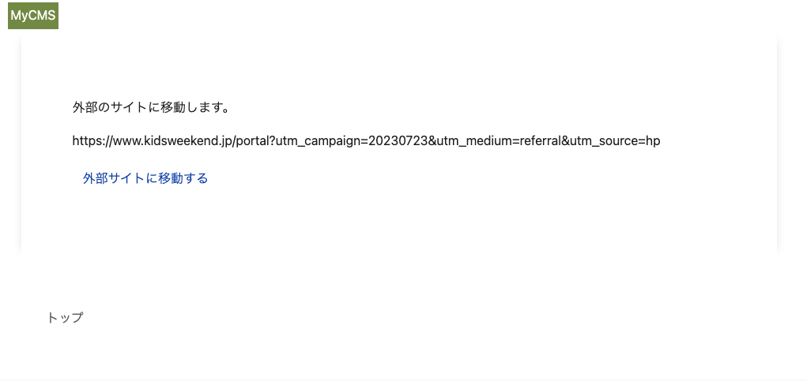

Day3: 短縮URLトラッキング機能
機能要件を再掲します。
- インプレッション数、クリック数のカウントをすることができます
- インプレッション数、クリック数は、Redisを用いて一時保存し、定期的にDBできるように、バッチ処理を実装します
Redisの説明と使用目的
Redisは、インメモリ型のデータベースです。今回は、インプレッション数、クリック数をカウントするために使用します。 インプレッション数、クリック数をカウントするために、毎回データベースに保存すると、データベースに負荷がかかります。 一時的なデータを保存するために、Redisを使用して、定期的にデータベースに保存するようにします。
Redisサーバーの設定
ターミナルで、以下のコマンドを実行します。
apt-get update && apt-get install -y redis-server
Dockerfileを更新
L12行目の最後に、redis-serverを追加します。
RUN apt-get update -qq && apt-get install -y build-essential nodejs yarn vim zlib1g-dev liblzma-dev patch redis-server
entrypoint.local.shを更新
Filename: entrypoint.local.sh
#!/bin/bash
set -e
redis-server --daemonize yes
# https://github.com/evanw/esbuild/issues/1511
# yarn build --watch < /dev/zero & yarn build:css --watch & bundle exec rails s -b 0.0.0.0
yarn build --watch < /dev/zero & yarn build:css --watch
Redisサーバーの起動を確認する
redis-server
以下のように表示されればOKです。
/workspace# redis-server
14247:C 30 Jul 2023 15:31:58.500 # oO0OoO0OoO0Oo Redis is starting oO0OoO0OoO0Oo
14247:C 30 Jul 2023 15:31:58.500 # Redis version=6.0.16, bits=64, commit=00000000, modified=0, pid=14247, just started
14247:C 30 Jul 2023 15:31:58.500 # Warning: no config file specified, using the default config. In order to specify a config file use redis-server /path/to/redis.conf
_._
_.-``__ ''-._
_.-`` `. `_. ''-._ Redis 6.0.16 (00000000/0) 64 bit
.-`` .-```. ```\/ _.,_ ''-._
( ' , .-` | `, ) Running in standalone mode
|`-._`-...-` __...-.``-._|'` _.-'| Port: 6379
| `-._ `._ / _.-' | PID: 14247
`-._ `-._ `-./ _.-' _.-'
|`-._`-._ `-.__.-' _.-'_.-'|
| `-._`-._ _.-'_.-' | http://redis.io
`-._ `-._`-.__.-'_.-' _.-'
|`-._`-._ `-.__.-' _.-'_.-'|
| `-._`-._ _.-'_.-' |
`-._ `-._`-.__.-'_.-' _.-'
`-._ `-.__.-' _.-'
`-._ _.-'
`-.__.-'
14247:M 30 Jul 2023 15:31:58.509 # Server initialized
14247:M 30 Jul 2023 15:31:58.514 * Ready to accept connections
Ctrl + CでRedisサーバーを停止します。
Redis用の秘匿情報を設定
ターミナルを開いて、以下のコマンドを実行します。
EDITOR=vim bin/rails credentials:edit -e development
redis:
host: 127.0.0.1
port: 6379
Redisの接続確認
redis-serverを起動します。
redis-server --daemonize yes
RailsコンソールからRedisに接続できることを確認します。
bin/rails c
Redisクライアントを作成するコードを実行します。
Redis.current
=> #<Redis client v4.5.1 for redis://127.0.0.1:6379/0>
OKの場合はRedisに接続できています。
Redis.current.set("test", "test")
#=> "OK"
上記でRedisに保存した値を取得する場合は、以下のコードを実行します。
Redis.current.get("test")
#=> "test"
※Redisには色んな関数が用意されています。詳しくは、https://github.com/redis/redis-rbを参照してください。
Redisのラッパークラスを作成
libディレクトリ以下に作成していきます。
mkdir -p lib/cms_redis && touch lib/cms_redis/core.rb
以下のように編集します。
Filename: lib/cms_redis/core.rb
# frozen_string_literal: true
module CmsRedis
module Core
RAILS_MAX_THREADS = 16
REDIS_TIMEOUT = 1
EXPIRES = 60 * 60
class Pool
class Wrapper < ::ConnectionPool::Wrapper
def initialize(pool)
@pool = pool
end
end
class << self
def with(&block)
pool.with(&block)
end
def connect
Wrapper.new(pool)
end
private
def pool
@pool ||= ::ConnectionPool.new(
size: ENV.fetch("RAILS_MAX_THREADS", RAILS_MAX_THREADS).to_i,
timeout: ENV.fetch("REDIS_TIMEOUT", REDIS_TIMEOUT).to_i
) do
::Redis.new(Rails.application.credentials.redis.try(&:to_h))
end
end
end
end
class Client
# Redisクライアントを初期化する
def initialize(cache_key = "", expires = EXPIRES)
@connection = ::CmsRedis::Core::Pool.connect
@cache_key = cache_key
@expires = expires
end
# Redisに保存されている値を取得する&整形する
def fetch
return_array_with_sym = array_with_sym
return return_array_with_sym unless return_array_with_sym.blank?
return unless block_given?
array = yield
set(array)
array_with_sym
end
# Redisに保存されている値を取得する
def get
@connection.get(@cache_key)
end
# Redisに保存する。その際、有効期限を設定する
def set(array)
@connection.with do |redis|
redis.set(@cache_key, array.to_json)
redis.expire(@cache_key, @expires)
end
end
# Redisに保存されている値を削除する
def del
@connection.del(@cache_key)
end
# Redisにキャッシュされているかどうかを判定する
def cache?
get.present?
end
# Redisに保存されている値を取得し、JSONをパースして返す
def array_with_sym
result = get
array = ["[]", nil].include?(result) ? [] : result
return [] if array.blank?
JSON.parse(array, { symbolize_names: true })
end
end
end
end
RailsコンソールからラッパークラスからRedisに接続できることを確認
bin/rails c
Railsコンソールでコードを実行してみましょう。
client = CmsRedis::Core::Client.new("test")
client.set("test")
#=> true
client.get
# => "\"test\""
client.fetch
#=> "test"
client.del
#=> 1
client.fetch
#=> nil
client.set([1])
#=> true
client.fetch
#=> [1]
インプレッション数、クリック数のカウント方針
- キャッシュキー
short-url:#{id}を作成する - キャッシュする値は、
[{:short_url_id=>"ae8c2bec-9f69-4de2-bdfb-7dbf453ed3aa", :tracking_type=>"imp", :created_at=>1690700669}, {...}]のような形式で保存する - キャッシュするcreated_atは、
Time.now.to_iで保存する
マイグレーション
ターミナルで、以下のコマンドを実行します。
bin/rails g migration CreateTrackingType
bin/rails g migration CreateShortUrlTrackings
以下のように編集します。
- Filename:
db/migrate/..._create_tracking_type.rb
# frozen_string_literal: true
class CreateTrackingType < ActiveRecord::Migration[7.0]
def up
create_enum :tracking_type, %w[imp click]
end
def down
# While there is a `create_enum` method, there is no way to drop it. You can
# how ever, use raw SQL to drop the enum type.
execute <<-SQL
DROP TYPE tracking_type;
SQL
end
end
- Filename:
db/migrate/..._short_url_tracking.rb
# frozen_string_literal: true
class CreateShortUrlTracking < ActiveRecord::Migration[7.0]
def change
create_table :short_url_trackings, id: :uuid do |t|
t.references :short_url, foreign_key: true, deferrable: :deferred, type: :uuid, comment: "ShortUrlテーブルの外部キー"
t.enum :tracking_type, enum_type: :tracking_type, default: :imp, comment: "追跡タイプ"
t.datetime :created_at, null: false
end
end
end
マイグレーションを実行します。
bin/rails db:migrate
CmsRedis::ShortUrlを作成
touch lib/cms_redis/short_url.rb
以下のように編集します。
Filename: lib/cms_redis/short_url.rb
# frozen_string_literal: true
module CmsRedis
class ShortUrl
EXPIRES = 60 * 60 * 24
CACHE_KEY = "short-url"
def initialize(cache_key = "", expires = EXPIRES)
@cache_key = cache_key
@expires = expires
@connection = ::CmsRedis::Core::Client.new(@cache_key, @expires)
end
def fetch
@connection.fetch do
[]
end
end
def cache?
@connection.cache?
end
def set(hash)
array = fetch
array << hash
@connection.set(array)
end
def del
@connection.del
end
end
end
ShortUrlTrackingモデルを作成
ShortUrlTrackingモデルを作成します。ターミナルで、以下のコマンドを実行します。
touch app/models/short_url_tracking.rb
以下のように編集します。
Filename: app/models/short_url_tracking.rb
# frozen_string_literal: true
class ShortUrlTracking < ApplicationRecord
belongs_to :short_url
enum tracking_type: {
imp: "imp",
click: "click"
}
scope :when_created_at, ->(date) { where(created_at: date.beginning_of_day..date.end_of_day) }
# キャッシュに保存されている値を取得して、データベースに保存する
def self.import_all!
targets = ShortUrl.fetch_all_from_redis.map { |hash| hash_to_attribute(hash) }
result = import targets
ShortUrl.del_all_redis if result.ids.present?
end
# キャッシュに保存されている値から、インスタンスを作成する
def self.hash_to_attribute(hash)
new(
short_url_id: hash[:short_url_id],
tracking_type: hash[:tracking_type],
created_at: DateTime.strptime(hash[:created_at].to_s, "%s")
)
end
# 今日作成されたデータを取得する
def self.created_today
when_created_at(Date.today)
end
end
ShortUrlモデルの修正
# frozen_string_literal: true
class ShortUrl < ApplicationRecord
belongs_to :admin
has_many :short_url_trackings
validates :label_name, length: { maximum: 255, too_long: "最大%<count>s文字まで使えます" }
validates :original_url, presence: true
validates :utm_source, presence: true, length: { maximum: 255, too_long: "最大%<count>s文字まで使えます" }
validates :utm_medium, presence: true, length: { maximum: 255, too_long: "最大%<count>s文字まで使えます" }
validates :utm_campaign, presence: true, length: { maximum: 255, too_long: "最大%<count>s文字まで使えます" }
before_create :fill_custom_key
IMP = "imp"
CLICK = "click"
def fill_custom_key
self.custom_key = loop do
uuid = SecureRandom.alphanumeric(10) # JWlXD6cCxM
break uuid unless self.class.exists?(custom_key: uuid)
end
end
def short_url
Rails.application.routes.url_helpers.short_url_url(
id: custom_key,
host: Rails.application.routes.default_url_options[:host],
protocol: Rails.application.routes.default_url_options[:protocol]
)
end
def parameter_url
query = {
utm_source: self&.utm_source,
utm_medium: self&.utm_medium,
utm_campaign: self&.utm_campaign
}
uri = URI.parse(self&.original_url)
uri.query = query.to_param
uri.to_s
end
# インプレッション数をカウントする
def imp!
tracking_to_redis!(tracking_type: IMP)
end
# クリック数をカウントする
def click!
tracking_to_redis!(tracking_type: CLICK)
end
# キャッシュキーを作成する
def tracking_cache_key
"#{::CmsRedis::ShortUrl::CACHE_KEY}:#{id}"
end
# Redisに接続する
def connect_redis
::CmsRedis::ShortUrl.new(tracking_cache_key)
end
# Redisに保存する
def tracking_to_redis!(tracking_type: IMP)
hash = {
short_url_id: id,
tracking_type: tracking_type,
created_at: Time.current.to_i
}
connect_redis.set(hash)
end
# Redisから取得する
def fetch_from_redis
connect_redis.fetch
end
# Redisから全て取得する
def self.fetch_all_from_redis
all.map do |short_url|
short_url&.fetch_from_redis
end.flatten
end
# Redisから削除する
def del_redis
connect_redis.del
end
# Redisから全て削除する
def self.del_all_redis
all.map do |del_redis|
del_redis&.del_redis
end
end
end
ShortUrlTrackingを使用して、インプレッション数、クリック数をカウントする
Railsコンソールを起動します。
bin/rails c
以下のコードを実行します。
ShortUrl.last.imp!
#=> true
ShortUrl.last.click!
#=> true
ShortUrl.last.fetch_from_redis
#=> [{:short_url_id=>"ae8c2bec-9f69-4de2-bdfb-7dbf453ed3aa", :tracking_type=>"imp", :created_at=>1690701910},
# {:short_url_id=>"ae8c2bec-9f69-4de2-bdfb-7dbf453ed3aa", :tracking_type=>"click", :created_at=>1690701910}]
imp!、click!メソッドを呼び出すと、Redisに保存され、fetch_from_redisメソッドを呼び出すと、Redisに保存されている値を取得できます。
このメソッドをコントローラーで呼び出すことができれば、インプレッション数、クリック数をカウントすることができます。
ルーティングの設定
インプレッション数、クリック数のカウントをするために、ルーティングを設定します。
| パス | 説明 |
|---|---|
/l/:id | 確認画面、インプレッション数のカウント |
/l/:id/click | クリック数のカウント、リダイレクト |
touch config/routes/user/short_urls.rb
Filename: config/routes/user/short_urls.rb
# frozen_string_literal: true
Rails.application.routes.draw do
get "/l/:id" => "user/short_urls#show", as: :short_url
get "/l/:id/click" => "user/short_urls#click", as: :click_short_url
end
bin/rails routesでルーティングが設定されていることを確認します。
bin/rails routes -g short_url
以下が表示されればOKです。
short_url GET /l/:id(.:format) user/short_urls#show
click_short_url GET /l/:id/click(.:format) user/short_urls#click
ShortUrlコントローラー
ユーザー側のコントローラーを作成します。
touch app/controllers/user/short_urls_controller.rb
以下のように編集します。
Filename: app/controllers/user/short_urls_controller.rb
# frozen_string_literal: true
class User::ShortUrlsController < User::ApplicationController
def show
redirect_to root_url and return unless params[:id].present? && params[:id] =~ Regexp.new("\\A[a-zA-Z0-9]{10}+\\z")
@short_url = ShortUrl.find_by(custom_key: params[:id])
redirect_to root_url and return unless @short_url.present?
# imp計測
@short_url&.imp!
end
def click
redirect_to root_url and return unless params[:id].present? && params[:id] =~ Regexp.new("\\A[a-zA-Z0-9]{10}+\\z")
@short_url = ShortUrl.find_by(custom_key: params[:id])
redirect_to root_url and return unless @short_url.present?
# click計測
@short_url&.click!
# click後のリダイレクト
redirect_to @short_url&.parameter_url, allow_other_host: true
end
end
確認画面を作成
mkdir -p app/views/user/short_urls && touch app/views/user/short_urls/show.html.erb
以下のように編集します。
Filename: app/views/user/short_urls/show.html.erb
<main id="kiji-main">
<div class="container max-width-980">
<div class="article-main">
<div class="article-main-content">
外部のサイトに移動します。
<div class="article-main-content mt-3">
<%= @short_url&.parameter_url %>
</div>
<div class="article-main-content mt-3">
<%= link_to click_short_url_path(id: params[:id]), target: "_blank", class: "btn" do %>
外部サイトに移動する
<% end %>
</div>
</div>
</div>
<div class="footer-breadcrumb">
<ul class="breadcrumb">
<li>
<%= link_to user_top_path do %>
トップ
<% end %>
</li>
</ul>
</div>
</div>
</main>
ブラウザで確認してみます
bin/rails s
別ターミナルで、entrypoint.local.shを実行します。
sh entrypoint.local.sh
eg) http://localhost:3000/l/e09i1Zxhye
※管理画面>短縮URL一覧>該当の短縮URL>短縮URLの値をコピー(短縮URLを作成していなければ、作成してください。)
以下のような画面になればOKです。

再度Railsコンソールで確認
Railsコンソールを起動します。
bin/rails c
ブラウザで確認した短縮URLのインプレッション数、クリック数がカウントされていることを確認します。
short_url = ShortUrl.find_by_custom_key("e09i1Zxhye") # 自分の環境の値に変更してください
short_url.fetch_from_redis
#=> [{:short_url_id=>"ae8c2bec-9f69-4de2-bdfb-7dbf453ed3aa", :tracking_type=>"imp", :created_at=>1690701910},
# {:short_url_id=>"ae8c2bec-9f69-4de2-bdfb-7dbf453ed3aa", :tracking_type=>"click", :created_at=>1690701910},
# {:short_url_id=>"ae8c2bec-9f69-4de2-bdfb-7dbf453ed3aa", :tracking_type=>"imp", :created_at=>1690702930}]
バッチ処理に必要なコードを実装
※バッチ処理の設定は行いません
touch lib/tasks/short_url.rake
以下のように編集します。
Filename: lib/tasks/short_url.rake
# frozen_string_literal: true
namespace :short_url do
desc "Insert short_url_tracking data from redis cache"
task insert: :environment do |task|
start_message = "#### START: #{task&.name}. ####"
puts start_message
Rails.logger.info start_message
# インプレッション数、クリック数をRedisからデータベースに保存する
ShortUrlTracking.import_all!
end_message = "#### END: #{task&.name}. ####"
puts end_message
Rails.logger.info end_message
end
end
ターミナルを開き、コードを実行します。
bin/rails short_url:insert
#### START: short_url:insert. ####
#### END: short_url:insert. ####
データベースを見ると、保存されていることが確認できます。
bin/rails c
> ShortUrlTracking.all
# => ShortUrlTracking Load (0.5ms) SELECT "short_url_trackings".* FROM "short_url_trackings"
# [#<ShortUrlTracking:0x0000ffffb04eda30
# id: "538c894f-45d7-46f9-9923-ab3922d98c53",
# short_url_id: "ae8c2bec-9f69-4de2-bdfb-7dbf453ed3aa",
# tracking_type: "imp",
# created_at: Sun, 30 Jul 2023 16:25:10.000000000 JST +09:00>,
# #<ShortUrlTracking:0x0000ffffb04dbc68
# id: "4f2512c2-cd8a-4fda-b943-00f15b33cadf",
# short_url_id: "ae8c2bec-9f69-4de2-bdfb-7dbf453ed3aa",
# tracking_type: "click",
# created_at: Sun, 30 Jul 2023 16:25:10.000000000 JST +09:00>,
# #<ShortUrlTracking:0x0000ffffb04dbba0
# id: "f841365e-f2f4-43e9-aa03-8cf7bfb85395",
# short_url_id: "ae8c2bec-9f69-4de2-bdfb-7dbf453ed3aa",
# tracking_type: "imp",
# created_at: Sun, 30 Jul 2023 16:42:10.000000000 JST +09:00>,
# #<ShortUrlTracking:0x0000ffffb04dbad8
# id: "612767db-bc17-420c-a64e-cdc4fa9dd827",
# short_url_id: "ae8c2bec-9f69-4de2-bdfb-7dbf453ed3aa",
# tracking_type: "imp",
# created_at: Sun, 30 Jul 2023 16:42:15.000000000 JST +09:00>]
あとはバッチ処理を設定すれば、定期的にデータベースに保存されます。 ※今回は、バッチ処理の設定は行いません